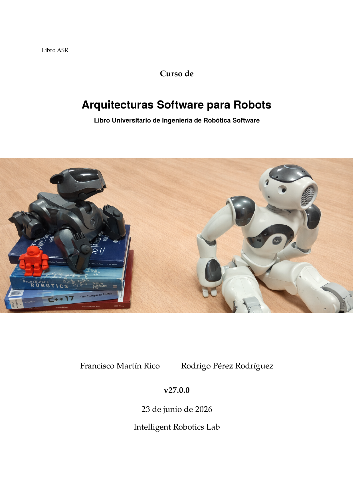

↓ Haz clic en la portada para descargar el PDF
Arquitecturas Software para Robots
Libro Universitario de Ingeniería de Robótica Software
La robótica es, por naturaleza, una disciplina integradora. Este libro nace con el objetivo de formar ingenieras e ingenieros en robótica especializados en software, capaces no solo de programar componentes aislados, sino de diseñar, razonar, evaluar y evolucionar arquitecturas software para robots reales. El texto combina fundamentos teóricos —componentes, comunicación, ejecución reactiva, máquinas de estados y Behavior Trees— con una progresión práctica de seis prácticas de complejidad creciente, todo ello apoyado en ROS 2 como infraestructura concreta de referencia.
↓ Descargar el libro (PDF)Sobre el libro
El libro está organizado en dos partes complementarias: una parte teórica de siete capítulos y una parte práctica de seis prácticas de ingeniería progresiva.
Parte I — Fundamentos teóricos
- Cap. 1 — Arquitectura software en robótica
- Cap. 2 — Ejecución y comunicación básica
- Cap. 3 — Percepción robótica y representación espacial
- Cap. 4 — Arquitecturas deliberativas e híbridas
- Cap. 5 — Máquinas de estados finitos (FSM)
- Cap. 6 — Behavior Trees
- Cap. 7 — Arquitecturas de referencia y Deep ROS 2
Parte II — Prácticas
- Práctica 1 — Entorno de desarrollo y primer sistema ROS 2
- Práctica 2 — Teleoperación reactiva con bumper (Kobuki)
- Práctica 3 — Seguimiento 2D/3D y evitación con láser
- Práctica 4 — Navegación con Nav2 y patrullaje mediante FSM
- Práctica 5 — Robot Camarero con Behavior Trees
- Práctica 6 — Proyecto abierto: arquitectura Misión-Tarea-Capacidad
Diapositivas
Materiales de clase en formato de diapositivas para cada capítulo y práctica del libro. Haz clic en cualquier diapositiva para descargar el PDF correspondiente.
Capítulos
Prácticas